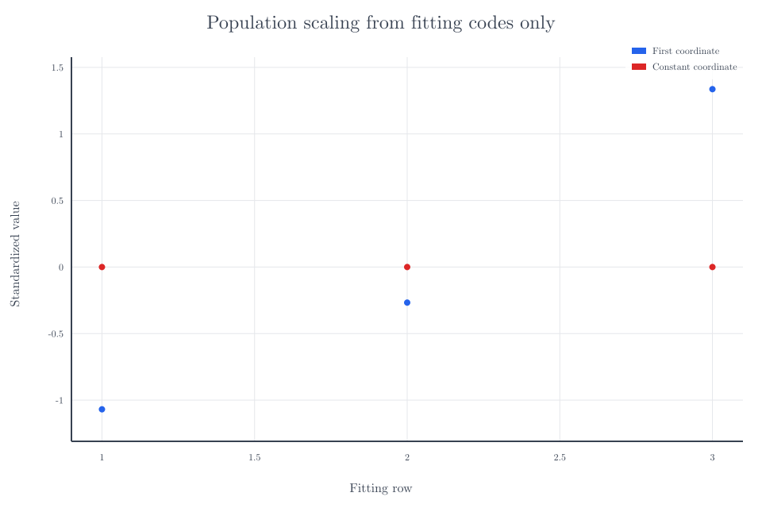
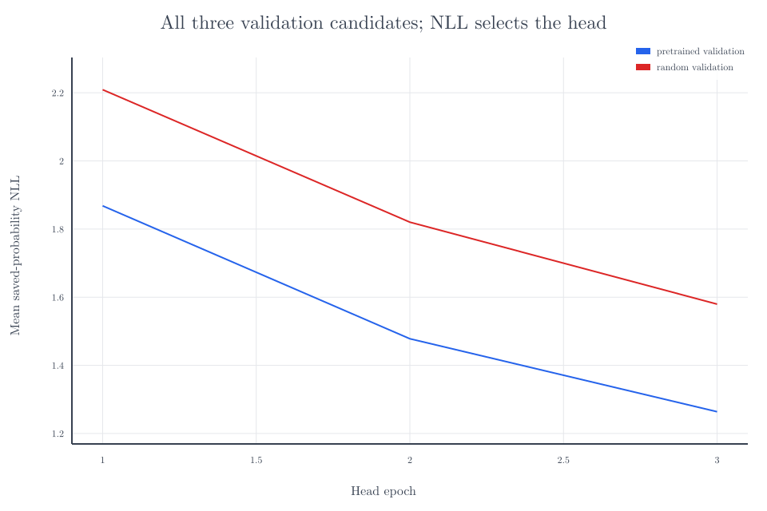
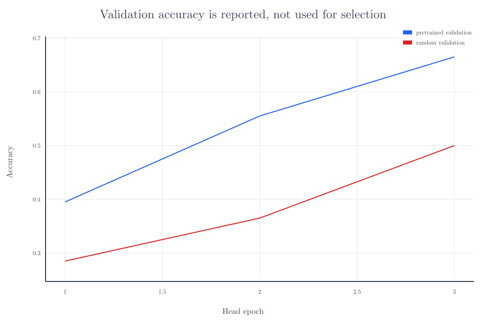
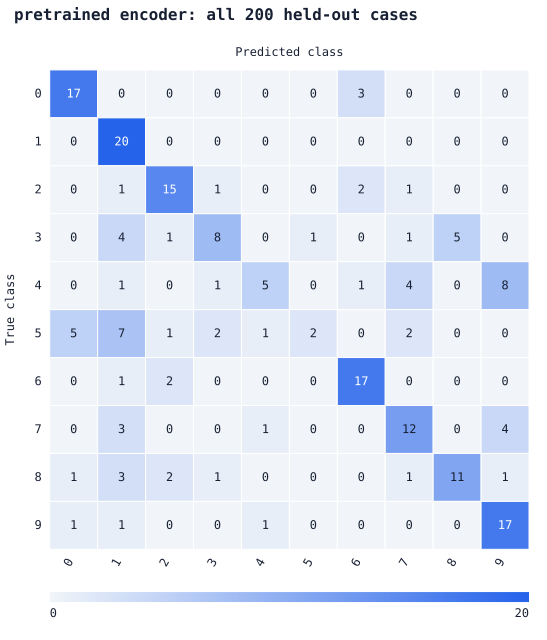
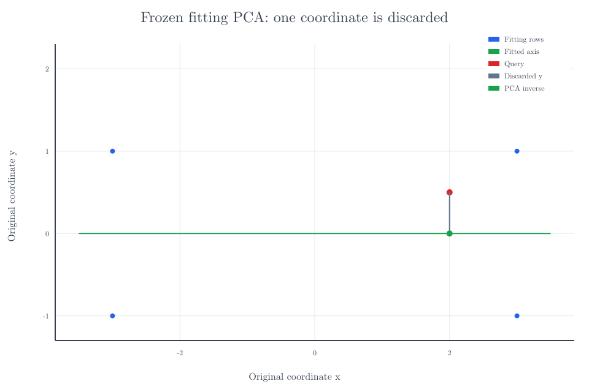
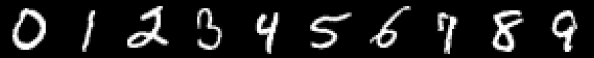

Encoder Pretraining: A Frozen Feature Comparison
Abstract
Can a reconstruction encoder supply useful features for a labelled task? This experiment freezes a small MNIST encoder and trains only a 330-parameter softmax head. A pretrained encoder reaches 62% held-out accuracy; the same encoder's original random initialization reaches 44%. Both heads receive the same initialization, batch order and 96 updates. Pretraining adds 96 unsupervised updates, so total compute is unequal. Every fitting loop, checkpoint choice, first derivative, confusion count and unfiltered example is retained. This is one small-data, single-seed comparison.
Reuse features, then freeze them
Reconstruction pretraining learns without classification labels. The original work on stacked denoising autoencoders [Vincent et al. (2010)](https://www.jmlr.org/papers/v11/vincent10a.html) studies useful representations with deeper networks and supervised fine-tuning. Here the teaching experiment uses one ordinary ReLU autoencoder and a frozen linear probe. It does not reproduce that paper's architecture, denoising criterion or benchmark results. The decoder is discarded.
#include <dm/dm.hpp>
int main() {
std::filesystem::create_directories("build");
dm::graphics::Diagram d(35, 1100);
dm::graphics::DiagramNodeStyle st;
st.width = 5.6;
st.height = 2.6;
st.font_size = 18;
d.node("x", {0, 4}, "Images only\nFit / validation / test", st)
.node("e", {8, 4}, "Frozen encoder\n784 -> 32 ReLU", st)
.node("s", {16, 4}, "Frozen scaling\nFit-code mean / std", st)
.node("h", {24, 4}, "Trainable head\n32 -> 10 softmax", st)
.edge("x", "e")
.edge("e", "s")
.edge("s", "h")
.node("y", {24, -2}, "Fitting labels\nHead cross-entropy only", st)
.edge("y", "h")
.text(
{12, -7},
"25,120 encoder values stay bit-exact. Only 330 head values are updated.\nValidation "
"labels choose a head checkpoint; test labels score the selected head.",
20)
.save_svg("build/pretraining_method.svg");
}
A population scale you can check by hand
Take fitting codes [[1,5],[2,5],[4,5]]. The first coordinate has mean 7/3 and population variance 14/9; its scale is sqrt(14)/3. The second coordinate has mean 5 and zero variance, so its scale is floored at 1e-6. The implementation accumulates both passes in row-order double precision and casts to the code dtype once at the end. A held-out code never refits these values. Frozen weights stop encoder derivatives, while derivatives through the image and head stay live.
#include <dm/dm.hpp>
int main() {
namespace n = dm::nn;
const auto t = n::DType::Float64;
const auto fit = n::models::FitTransferScaling(n::tensor({1., 5., 2., 5., 4., 5.}, {3, 2}, t));
const auto standardized =
(n::tensor({1., 5., 2., 5., 4., 5.}, {3, 2}, t) - fit.center) / fit.scale;
std::print("| coordinate | mean | scale |\n|---:|---:|---:|\n");
for (int j = 0; j < 2; ++j)
std::print("| {} | {:.9f} | {:.9f} |\n", j, fit.center.at({j}), fit.scale.at({j}));
auto x = n::full({1, 3}, .4, t).requires_grad_(), w = n::full({3, 2}, .5, t).requires_grad_(),
b = n::full({2}, .2, t).requires_grad_();
auto code = n::models::FrozenEncoderFeatures(x, w, b);
const auto g = n::grad(n::sum(code) + 0 * n::sum(w) + 0 * n::sum(b), {x, w, b});
if (g[0].to_vector<double>() != std::vector<double>(3, 1) || n::sum(n::abs(g[1])).item() != 0 ||
n::sum(n::abs(g[2])).item() != 0)
return 1;
auto plot = dm::graphics::RPlot::create();
plot.points(
{1, 2, 3},
n::select(standardized, 1, 0).to_vector<double>(),
"First coordinate",
{37, 99, 235},
4.)
.points(
{1, 2, 3},
n::select(standardized, 1, 1).to_vector<double>(),
"Constant coordinate",
{220, 38, 38},
4.)
.x_label("Fitting row")
.y_label("Standardized value")
.title("Population scaling from fitting codes only")
.save_svg("build/pretraining_scaling.svg");
std::print("\nInput gradient [1,1,1]; supplied encoder weight and bias gradients are zero.\n");
}| coordinate | mean | scale |
|---|---|---|
| 0 | 2.333333333 | 1.247219129 |
| 1 | 5.000000000 | 0.000001000 |
Input gradient [1,1,1]; supplied encoder weight and bias gradients are zero.

Original data and a visible prerequisite fit
The native MNIST preparation task supplies original digits and provenance. Fitting uses 1,000
images, validation 200 and test 200, balanced across ten classes with disjoint original IDs.
The test IDs belong to the official test partition. Native LoadSaliency reads those aligned
images, labels and IDs. No Python data preparation or external checkpoint is required.
The complete prerequisite below repeats the undercomplete autoencoder's three epochs and 96 Adam updates, selecting by validation *reconstruction MSE*. It saves the initial arrays before any update and the selected arrays after restore. Labels do not enter this fitting loop. The random control uses those very same initial encoder arrays. Both checkpoint parameter sets are checked against the frozen original experiment.
#include <dm/dm.hpp>
int main() {
namespace n = dm::nn;
std::filesystem::create_directories("build");
const std::filesystem::path cache = dm::datasets::data_home();
dm::datasets::prepare_example_data("mnist-assets", cache.string());
const auto pools = n::models::LoadSaliency(cache / "saliency");
const auto fit = pools[0].images.reshape({1000, 784});
const auto validation = pools[1].images.reshape({200, 784});
const auto test = pools[2].images.reshape({200, 784});
n::ParameterStore p(1471);
{
n::NoGradGuard guard;
n::models::UndercompleteAutoencoder(p, n::zeros({1, 784}));
}
p.save("build/pretraining_initial_encoder.npz");
const auto initial_test = n::models::UndercompleteAutoencoder(p, test).reconstruction.detach();
const auto pixel_mean = n::mean(fit, {0}, true);
n::OptimizerConfig config;
config.kind = n::OptimizerKind::Adam;
n::Optimizer optimizer(p, .003, config);
n::BatchOrder batches(1000, 32, 1483);
const auto probe = n::take_rows(fit, {0, 1});
const auto first_gradients = n::grad(
n::mse(n::models::UndercompleteAutoencoder(p, probe).reconstruction, probe), p.parameters());
std::print("| parameter | initial gradient L2 norm |\n|---|---:|\n");
for (std::size_t i = 0; i < first_gradients.size(); ++i) {
const double norm = n::sqrt(n::sum(n::square(first_gradients[i]))).item();
if (!std::isfinite(norm) || norm <= 0)
return 1;
std::print("| {} | {:.7f} |\n", p.names()[i], norm);
}
double best = std::numeric_limits<double>::infinity();
int selected = 0;
std::vector<double> epochs, training, valid;
std::print("\n| epoch | fitting pre-update MSE | validation MSE |\n|---:|---:|---:|\n");
for (int epoch = 1; epoch <= 3; ++epoch) {
batches.begin_epoch();
double total = 0;
std::size_t seen = 0;
for (;;) {
const auto rows = batches.next();
if (rows.empty())
break;
const auto input = n::take_rows(fit, rows);
const auto output = n::models::UndercompleteAutoencoder(p, input);
const auto objective = n::mse(output.reconstruction, input);
const double value = objective.item();
if (!std::isfinite(value))
return 1;
total += value * rows.size();
seen += rows.size();
optimizer.minimize(objective);
}
n::NoGradGuard guard;
const double score =
n::mse(n::models::UndercompleteAutoencoder(p, validation).reconstruction, validation)
.item();
if (seen != 1000 || !std::isfinite(score))
return 1;
if (score < best) {
best = score;
selected = epoch;
p.save("build/pretraining_selected_encoder.npz");
}
epochs.push_back(epoch);
training.push_back(total / seen);
valid.push_back(score);
std::print("| {} | {:.9f} | {:.9f} |\n", epoch, total / seen, score);
}
p.load("build/pretraining_selected_encoder.npz");
n::NoGradGuard guard;
const auto output = n::models::UndercompleteAutoencoder(p, test);
const auto zero_code = n::broadcast_to(n::sigmoid(p.at("decoder/b")), test.shape());
std::vector<std::int64_t> shifted;
for (int i = 0; i < 200; ++i)
shifted.push_back((i + 1) % 200);
const auto shuffled = n::sigmoid(
n::matmul(n::take_rows(output.code, shifted), p.at("decoder/W")) + p.at("decoder/b"));
const std::vector<std::pair<std::string, n::Tensor>> predictions{
{"initial network", initial_test},
{"black", n::zeros_like(test)},
{"fitting pixel mean", n::broadcast_to(pixel_mean, test.shape())},
{"selected autoencoder", output.reconstruction},
{"zero code", zero_code},
{"cyclically shuffled codes", shuffled}};
std::print(
"\nSelected epoch: {}. Validation MSE: {:.9f}.\n\n| held-out predictor | MSE over 200 images "
"|\n|---|---:|\n",
selected,
best);
for (const auto& [name, prediction] : predictions)
std::print("| {} | {:.9f} |\n", name, n::mse(prediction, test).item());
n::save_npz(
"build/pretraining_prerequisite_results.npz",
{{"test_input", test},
{"test_reconstruction", output.reconstruction},
{"test_code", output.code},
{"test_labels", pools[2].labels},
{"test_ids", pools[2].source},
{"fit_ids", pools[0].source},
{"validation_ids", pools[1].source},
{"pixel_mean", pixel_mean},
{"initial_test", initial_test},
{"shuffled_test", shuffled}});
auto plot = dm::graphics::RPlot::create();
plot.lines(epochs, training, "Fitting, pre-update", {37, 99, 235}, 2.)
.lines(epochs, valid, "Validation, post-epoch", {220, 38, 38}, 2.)
.x_label("epoch")
.y_label("mean squared pixel error")
.title("Three epochs of Adam, learning rate 0.003")
.save_svg("build/pretraining_prerequisite.svg");
}| parameter | initial gradient L2 norm |
|---|---|
| encoder/W | 0.0206432 |
| encoder/b | 0.0018561 |
| decoder/W | 0.0203198 |
| decoder/b | 0.0076418 |
| epoch | fitting pre-update MSE | validation MSE |
|---|---|---|
| 1 | 0.109698705 | 0.066644996 |
| 2 | 0.065107134 | 0.055756476 |
| 3 | 0.055117222 | 0.048601795 |
Selected epoch: 3. Validation MSE: 0.048601795.
| held-out predictor | MSE over 200 images |
|---|---|
| initial network | 0.232573360 |
| black | 0.115653820 |
| fitting pixel mean | 0.067798078 |
| selected autoencoder | 0.050325811 |
| zero code | 0.220418379 |
| cyclically shuffled codes | 0.068210378 |

Two frozen encoders, two matched supervised heads
For each encoder, fitting codes determine a separate frozen population center and scale. The linear head uses seed 4703; batch order uses seed 4721. Each of three epochs visits all 1,000 fitting images exactly once in batches of 32, including the final batch of eight. There are 96 head updates per branch, 192 in total. Head loss is mean categorical log-softmax cross-entropy, with neither probability clipping nor encoder updates.
The diagnostic NLL in the history follows the original saved-probability convention: mean(-log(max(1e-30,p_truth))). It can differ from the stable training loss at extreme logits. The report evaluates this diagnostic with native Float64 tensor reductions; reduction roundoff is recorded separately from exact parameter and prediction comparisons. All three post-epoch validation-label NLL candidates are eligible; the lowest selects the head. Validation accuracy and held-out scores do not select it. Model-only restore starts a fresh head, not an optimizer resume. The programs below retain all first-batch endpoints, all 330 head derivatives, a shifted-label derivative control and all 26 original numeric archives.
#include <dm/dm.hpp>
namespace nn = dm::nn;
void Require(bool value, const std::string& message) {
if (!value)
throw std::runtime_error(message);
}
void Near(double value, double expected, double tolerance, const std::string& message) {
Require(std::abs(value - expected) <= tolerance, message);
}
std::vector<double> Score(const nn::Tensor& p, const nn::Tensor& labels) {
nn::NoGradGuard guard;
const auto logp = nn::log(nn::clip(nn::cast(p, nn::DType::Float64), 1e-30, 1));
return {
nn::mean(-nn::sum(nn::one_hot(labels, 10, 1, 0, nn::DType::Float64) * logp, {1}), {0}).item(),
nn::accuracy(p, labels)};
}
double Run(
const std::vector<nn::models::SaliencyData>& pools,
const nn::NamedTensors& source,
const std::filesystem::path& root,
int epochs,
const std::filesystem::path& init) {
std::filesystem::create_directories(root);
auto find = [](const nn::NamedTensors& values, const std::string& key) {
for (const auto& [name, value] : values)
if (name == key)
return value;
throw std::invalid_argument("missing array " + key);
};
const auto w = find(source, "encoder/W"), b = find(source, "encoder/b");
auto fit_code = nn::models::FrozenEncoderFeatures(pools[0].images.reshape({1000, 784}), w, b);
const auto fitted = nn::models::FitTransferScaling(fit_code);
auto center = fitted.center, scale = fitted.scale;
nn::models::FrozenEncoderClassifier model(w, b, center, scale);
nn::ParameterStore head(4703);
{
nn::NoGradGuard guard;
model.Forward(head, nn::zeros({1, 784}));
}
nn::OptimizerConfig config;
config.kind = nn::OptimizerKind::Adam;
nn::Optimizer optimizer(head, .003, config);
auto predict = [&](const nn::Tensor& image) {
nn::NoGradGuard guard;
const auto o = model.Forward(head, image.reshape({image.size(0), 784}));
return std::vector<nn::Tensor>{
o.code.contiguous(),
o.features.contiguous(),
o.logits.contiguous(),
o.probability.contiguous()};
};
auto arrays = [&]() {
nn::NamedTensors values{
{"encoder/W", model.encoder_weight()}, {"encoder/b", model.encoder_bias()}};
for (const auto& name : head.names())
values.emplace_back("head/" + name, head.at(name).detach().clone());
return values;
};
auto gradient = [&](const nn::Tensor& image, const nn::Tensor& labels) {
return nn::grad(
model.Forward(head, image.reshape({image.size(0), 784}), labels).loss, head.parameters());
};
if (head.count() != 330 || head.size() != 2)
return -1;
const auto frozen_w = model.encoder_weight(), frozen_b = model.encoder_bias();
nn::save_npz((root / "initial_arrays.npz").string(), arrays());
nn::NamedTensors data{{"feature_center", center}, {"feature_scale", scale}};
for (int k = 0; k < 3; ++k) {
const std::string split = k == 0 ? "fit" : k == 1 ? "validation" : "test";
data.emplace_back(split + "_images", pools[k].images);
data.emplace_back(split + "_labels", pools[k].labels);
data.emplace_back(split + "_source_ids", pools[k].source);
}
nn::save_npz((root / "data.npz").string(), data);
nn::BatchOrder order(1000, 32, 4721);
std::ofstream history(root / "history.tsv"), batches(root / "batches.tsv");
history.precision(17);
history << "epoch\tfit_nll\tfit_accuracy\tvalidation_nll\tvalidation_accuracy\n";
batches << "epoch\tstep\trow\tsource_id\n";
const auto fit_source = pools[0].source.to_vector<int>();
const auto best_path = (root / "best.npz").string();
double best = std::numeric_limits<double>::infinity();
int selected = 0, steps = 0;
const auto started = std::chrono::steady_clock::now();
for (int epoch = 1; epoch <= epochs; ++epoch) {
order.begin_epoch();
int seen = 0;
for (;;) {
auto rows = order.next();
if (rows.empty())
break;
auto x = nn::take_rows(pools[0].images, rows), y = nn::take_rows(pools[0].labels, rows);
if (!steps) {
nn::save_npz((root / "first_batch.npz").string(), {{"images", x}, {"labels", y}});
auto f = predict(x);
nn::save_npz(
(root / "first_forward.npz").string(),
{{"code", f[0]}, {"features", f[1]}, {"logits", f[2]}, {"probability", f[3]}});
auto grad = gradient(x, y);
std::vector<int> shifted_labels;
for (int v : y.to_vector<int>())
shifted_labels.push_back((v + 1) % 10);
auto wrong = gradient(x, nn::from_vector(shifted_labels, y.shape()));
nn::NamedTensors gradients, wrong_gradients;
for (std::size_t i = 0; i < grad.size(); ++i) {
gradients.emplace_back("head/" + head.names()[i], grad[i]);
wrong_gradients.emplace_back("head/" + head.names()[i], wrong[i]);
}
nn::save_npz((root / "first_gradients.npz").string(), gradients);
nn::save_npz((root / "wrong_label_gradients.npz").string(), wrong_gradients);
}
optimizer.minimize(model.Forward(head, x.reshape({x.size(0), 784}), y).loss);
if (!steps)
nn::save_npz((root / "first_update_arrays.npz").string(), arrays());
for (auto row : rows)
batches << epoch << '\t' << steps << '\t' << row << '\t' << fit_source[row] << '\n';
++steps;
seen += int(rows.size());
}
Require(seen == 1000, "allfittingimages+labelsONCEperepoch");
Require(
nn::equal_bits(frozen_w, model.encoder_weight()) &&
nn::equal_bits(frozen_b, model.encoder_bias()),
"ENCODERweightsBITEXACTthroughALLheadupdates");
auto fit = Score(predict(pools[0].images)[3], pools[0].labels),
val = Score(predict(pools[1].images)[3], pools[1].labels);
history << epoch << '\t' << fit[0] << '\t' << fit[1] << '\t' << val[0] << '\t' << val[1]
<< '\n';
nn::save_npz((root / ("epoch" + std::to_string(epoch) + "_arrays.npz")).string(), arrays());
if (val[0] < best) {
best = val[0];
selected = epoch;
nn::save_npz(best_path, arrays()); // validation LABEL NLL selects HEAD checkpoint
}
std::cout << root.filename() << ",epoch" << epoch << ":fitacc=" << fit[1]
<< ",validationNLL=" << val[0] << ",valacc=" << val[1] << std::endl;
}
const double seconds =
std::chrono::duration<double>(std::chrono::steady_clock::now() - started).count();
nn::models::FrozenEncoderClassifier deployed(w, b, center, scale);
nn::ParameterStore restored(4703);
{
nn::NoGradGuard guard;
deployed.Forward(restored, nn::zeros({1, 784}));
}
const auto checkpoint = nn::load_npz(best_path);
for (const auto& name : restored.names())
restored.set(name, find(checkpoint, "head/" + name));
auto deployed_predict = [&](const nn::Tensor& image) {
nn::NoGradGuard guard;
const auto o = deployed.Forward(restored, image.reshape({image.size(0), 784}));
return std::vector<nn::Tensor>{
o.code.contiguous(),
o.features.contiguous(),
o.logits.contiguous(),
o.probability.contiguous()};
};
auto deployed_arrays = [&]() {
nn::NamedTensors values{
{"encoder/W", deployed.encoder_weight()}, {"encoder/b", deployed.encoder_bias()}};
for (const auto& name : restored.names())
values.emplace_back("head/" + name, restored.at(name).detach().clone());
return values;
};
Near(
Score(deployed_predict(pools[1].images)[3], pools[1].labels)[0],
best,
1e-10,
"restoredvalidationNLL");
auto before = deployed_arrays();
nn::NamedTensors output;
for (int k = 0; k < 3; ++k) {
const std::string split = k == 0 ? "fit" : k == 1 ? "validation" : "test";
auto f = deployed_predict(pools[k].images);
output.emplace_back(split + "_code", f[0]);
output.emplace_back(split + "_features", f[1]);
output.emplace_back(split + "_logits", f[2]);
output.emplace_back(split + "_probability", f[3]);
}
auto repeat = deployed_predict(pools[2].images);
Require(
nn::equal_bits(repeat[3], find(output, "test_probability")),
"image-onlyheadinferenceBITEXACTrepeat");
auto single = deployed_predict(nn::take_rows(pools[2].images, {0}));
const double parity = nn::max(nn::abs(single[3] - nn::take_rows(repeat[3], {0}))).item();
Require(parity < 2e-6, "classifierSingle/batchparity");
auto after = deployed_arrays();
for (std::size_t i = 0; i < before.size(); ++i)
Require(
nn::equal_bits(before[i].second, after[i].second),
"allclassifierinferenceweightsimmutable");
const auto labels = pools[2].labels.to_vector<int>();
const auto predicted_tensor = nn::cast(nn::argmax(repeat[3], 1), nn::DType::Int32);
const auto predicted = predicted_tensor.to_vector<int>();
nn::ConfusionMatrix confusion(10);
confusion.add(pools[2].labels, predicted_tensor);
output.emplace_back("test_predicted", predicted_tensor);
output.emplace_back("test_confusion", nn::cast(confusion.to_tensor(), nn::DType::Int32));
nn::save_npz((root / "outputs.npz").string(), output);
nn::save_npz((root / "model_arrays.npz").string(), after);
auto score = Score(repeat[3], pools[2].labels);
std::ofstream meta(root / "metrics.json");
meta.precision(17);
meta << "{\"frozen_encoder_parameters\":25120,\"trained_head_parameters\":330,\"epochs\":"
<< epochs << ",\"head_updates\":" << steps << ",\"selected_epoch\":" << selected
<< ",\"test_nll\":" << score[0] << ",\"test_accuracy\":" << score[1]
<< ",\"balanced_majority_accuracy\":0.1,\"single_batch_max_error\":" << parity
<< ",\"frozen_encoder_max_change\":0,\"training_seconds\":" << seconds << "}\n";
std::ofstream examples(root / "examples.tsv");
examples << "true_digit\tpredicted_digit\tsource_id\n";
const auto ids = pools[2].source.to_vector<int>();
for (int digit = 0; digit < 10; ++digit) {
const auto row = std::find(labels.begin(), labels.end(), digit) - labels.begin();
examples << digit << '\t' << predicted[row] << '\t' << ids[row] << '\n';
}
std::print(
"| {} | {} | {} | {:.9f} | {:.3f} |\n",
root.filename().string(),
steps,
selected,
score[0],
score[1]);
return seconds;
}
int main() {
const std::filesystem::path cache = dm::datasets::data_home();
dm::datasets::prepare_example_data("mnist-assets", cache.string());
const auto pools = nn::models::LoadSaliency(cache / "saliency");
const auto pretrained = nn::load_npz("build/pretraining_selected_encoder.npz"),
random = nn::load_npz("build/pretraining_initial_encoder.npz");
std::print(
"| encoder | head updates | selected epoch | held-out NLL | accuracy "
"|\n|---|---:|---:|---:|---:|\n");
Run(pools, pretrained, "build/pretraining/pretrained", 3, {});
Run(pools, random, "build/pretraining/random", 3, {});
std::filesystem::copy_file(
cache / "saliency/manifest.json", "build/pretraining/data_manifest.json",
std::filesystem::copy_options::overwrite_existing);
const auto a = nn::load_npz("build/pretraining/pretrained/initial_arrays.npz"),
b = nn::load_npz("build/pretraining/random/initial_arrays.npz");
for (std::size_t j = 2; j < a.size(); ++j)
Require(
a[j].first == b[j].first && nn::equal_bits(a[j].second, b[j].second),
"matched initial heads");
}| encoder | head updates | selected epoch | held-out NLL | accuracy |
|---|
"pretrained",epoch1:fitacc=0.316,validationNLL=1.86818,valacc=0.395 "pretrained",epoch2:fitacc=0.496,validationNLL=1.47801,valacc=0.555 "pretrained",epoch3:fitacc=0.605,validationNLL=1.26384,valacc=0.665
| pretrained | 96 | 3 | 1.286700641 | 0.620 |
"random",epoch1:fitacc=0.18,validationNLL=2.20909,valacc=0.285 "random",epoch2:fitacc=0.336,validationNLL=1.82024,valacc=0.365 "random",epoch3:fitacc=0.445,validationNLL=1.57962,valacc=0.5
| random | 96 | 3 | 1.628766156 | 0.440 |
The pretrained branch selects epoch 3 and scores 0.62 accuracy / 1.286701 NLL on the 200 test images. The random branch also selects epoch 3 and scores 0.44 / 1.628766. Balanced constant-class accuracy is 0.10. The observed difference is 18 percentage points for this seed and budget; there are no repeated seeds, uncertainty estimates or matched-total-compute claim.
Every eligible checkpoint stays visible
#include <dm/dm.hpp>
int main() {
std::filesystem::create_directories("build");
auto plot = dm::graphics::RPlot::create();
int branch = 0;
for (const std::string name : {"pretrained", "random"}) {
std::ifstream input("build/pretraining/" + name + "/history.tsv");
std::string line;
std::getline(input, line);
std::vector<double> epochs, fit, validation;
double e, fn, fa, vn, va;
while (input >> e >> fn >> fa >> vn >> va) {
epochs.push_back(e);
fit.push_back(fn);
validation.push_back(vn);
}
if (epochs.size() != 3)
return 1;
const dm::graphics::RGB color =
branch++ == 0 ? dm::graphics::RGB{37, 99, 235} : dm::graphics::RGB{220, 38, 38};
plot.lines(epochs, validation, name + " validation", color, 2.);
}
plot.x_label("Head epoch")
.y_label("Mean saved-probability NLL")
.title("All three validation candidates; NLL selects the head")
.save_svg("build/pretraining_nll.svg");
}
#include <dm/dm.hpp>
int main() {
std::filesystem::create_directories("build");
auto plot = dm::graphics::RPlot::create();
int branch = 0;
for (const std::string name : {"pretrained", "random"}) {
std::ifstream input("build/pretraining/" + name + "/history.tsv");
std::string line;
std::getline(input, line);
std::vector<double> epochs, fit, validation;
double e, fn, fa, vn, va;
while (input >> e >> fn >> fa >> vn >> va) {
epochs.push_back(e);
fit.push_back(fa);
validation.push_back(va);
}
if (epochs.size() != 3)
return 1;
const dm::graphics::RGB color =
branch++ == 0 ? dm::graphics::RGB{37, 99, 235} : dm::graphics::RGB{220, 38, 38};
plot.lines(epochs, validation, name + " validation", color, 2.);
}
plot.x_label("Head epoch")
.y_label("Accuracy")
.title("Validation accuracy is reported, not used for selection")
.save_svg("build/pretraining_accuracy.svg");
}
Confusion counts and fixed examples
Both confusion matrices include all 200 test cases, with true classes in rows and predictions in columns. Each row has support 20. The following tables report per-class recall without selecting successful classes. The gallery uses the first test case of each true digit, selected by class and source order before inspecting predictions. Its accompanying table retains every prediction, including mistakes.
#include <dm/dm.hpp>
int main() {
namespace n = dm::nn;
std::map<std::string, n::Tensor> arrays;
for (const auto& [name, value] : n::load_npz("build/pretraining/pretrained/outputs.npz"))
arrays.emplace(name, value);
const auto confusion = n::ConfusionMatrix::from_counts(arrays.at("test_confusion"));
confusion.save_svg(
"build/pretraining_pretrained_confusion.svg",
{.title = "pretrained encoder: all 200 held-out cases"});
std::print("| true digit | support | recall |\n|---:|---:|---:|\n");
for (int c = 0; c < 10; ++c) {
const auto m = confusion.per_class(c);
std::print("| {} | {} | {:.2f} |\n", c, m.support, m.recall);
}
}| true digit | support | recall |
|---|---|---|
| 0 | 20 | 0.85 |
| 1 | 20 | 1.00 |
| 2 | 20 | 0.75 |
| 3 | 20 | 0.40 |
| 4 | 20 | 0.25 |
| 5 | 20 | 0.10 |
| 6 | 20 | 0.85 |
| 7 | 20 | 0.60 |
| 8 | 20 | 0.55 |
| 9 | 20 | 0.85 |

#include <dm/dm.hpp>
int main() {
namespace n = dm::nn;
std::map<std::string, n::Tensor> arrays;
for (const auto& [name, value] : n::load_npz("build/pretraining/random/outputs.npz"))
arrays.emplace(name, value);
const auto confusion = n::ConfusionMatrix::from_counts(arrays.at("test_confusion"));
confusion.save_svg(
"build/pretraining_random_confusion.svg",
{.title = "random encoder: all 200 held-out cases"});
std::print("| true digit | support | recall |\n|---:|---:|---:|\n");
for (int c = 0; c < 10; ++c) {
const auto m = confusion.per_class(c);
std::print("| {} | {} | {:.2f} |\n", c, m.support, m.recall);
}
}| true digit | support | recall |
|---|---|---|
| 0 | 20 | 0.45 |
| 1 | 20 | 0.90 |
| 2 | 20 | 0.40 |
| 3 | 20 | 0.20 |
| 4 | 20 | 0.30 |
| 5 | 20 | 0.10 |
| 6 | 20 | 0.80 |
| 7 | 20 | 0.25 |
| 8 | 20 | 0.25 |
| 9 | 20 | 0.75 |

#include <dm/dm.hpp>
int main() {
namespace n = dm::nn;
std::map<std::string, n::Tensor> data, a, b;
for (const auto& [name, value] : n::load_npz("build/pretraining/pretrained/data.npz"))
data.emplace(name, value);
for (const auto& [name, value] : n::load_npz("build/pretraining/pretrained/outputs.npz"))
a.emplace(name, value);
for (const auto& [name, value] : n::load_npz("build/pretraining/random/outputs.npz"))
b.emplace(name, value);
const auto labels = data.at("test_labels").to_vector<int>(),
ids = data.at("test_source_ids").to_vector<int>();
const auto p = a.at("test_predicted").to_vector<int>(),
r = b.at("test_predicted").to_vector<int>();
std::vector<std::int64_t> rows;
std::print("| truth | source ID | pretrained | random |\n|---:|---:|---:|---:|\n");
for (int c = 0; c < 10; ++c) {
const auto i = std::find(labels.begin(), labels.end(), c) - labels.begin();
if (i == 200)
return 1;
rows.push_back(i);
std::print("| {} | {} | {} | {} |\n", c, ids[i], p[i], r[i]);
}
n::save_image_grid(
n::take_rows(data.at("test_images"), rows),
"build/pretraining_examples.png",
10,
0,
1,
2,
0,
3);
}| truth | source ID | pretrained | random |
|---|---|---|---|
| 0 | 66921 | 0 | 0 |
| 1 | 63380 | 1 | 1 |
| 2 | 68936 | 2 | 2 |
| 3 | 62280 | 1 | 3 |
| 4 | 62094 | 9 | 6 |
| 5 | 65222 | 7 | 7 |
| 6 | 61209 | 1 | 2 |
| 7 | 61721 | 9 | 9 |
| 8 | 69402 | 8 | 8 |
| 9 | 62570 | 9 | 9 |

What the comparison establishes
This run shows that the selected reconstruction encoder supplies features useful to this small supervised head. It keeps the entire encoder frozen and tests the effect of the representation through matched head initialization, labels, update count and batch order. Feature scaling is fitted separately to each representation, so the treatment includes that fitting-only scaling. Pretraining used extra computation, and test accuracy remains far below a full MNIST benchmark. The result does not establish a general pretraining benefit, disentanglement or optimal features.
Independent optional development validation reads only the generated archives. It checks both sets of 330 first derivatives and shifted-label controls (1,320 derivative values), exact first Float32 Adam updates, 6,000 batch rows, all six validation candidates, every frozen encoder snapshot, predictions, confusion counts and gallery identities. Its widened NumPy forward error is below 5e-6 on the frozen original; it is not part of report preparation or model fitting.
References
- Vincent, P., Larochelle, H., Lajoie, I., Bengio, Y. and Manzagol, P.-A. (2010). Stacked Denoising Autoencoders: Learning Useful Representations in a Deep Network with a Local Denoising Criterion. [JMLR 11(110), 3371–3408](https://www.jmlr.org/papers/v11/vincent10a.html). The present one-layer frozen-probe adaptation differs as stated above.